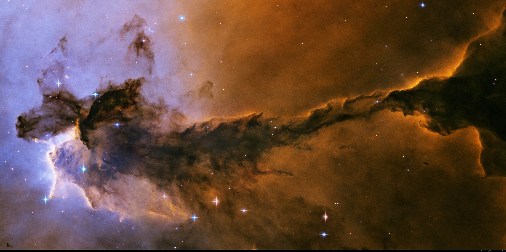

Hi. I'm Lorenzo Spina.
I am an astrophysicist and a data scientist of the Astronomical Observatory of Padua with 7+ years of experience in top research institutes around the globe. I study our own Galaxy: how it is structured, how it formed, and how it evolves with time. For my research I analyse huge volumes of data gathered by the largest-scale stellar surveys ever undertaken, such as Gaia, APOGEE, Gaia-ESO, and GALAH. My task is to exploit this enormous body of data to its maximum potential.
I also study chemical signatures of planet engulfment events in Sun-like stars. I in interested in knowning the rate of planetary systems that undergo a very dynamical past culminating with the fall of planets into the central star. This research sheds light on the possible evolutionary paths of planetary systems and on the probability of finding analogues of our quiet Solar System. See our last paper Spina et al. (2021, Nature Astronomy).
Last but not the least, I am always excited to share my love for astronomy, and for the open spirit of scientific inquiry. I practice this most visibly through teaching and mentorship. I also actively promote and support outreach activities for students and the general public.
Research
When, after so many efforts you have at last arrived at a certainty, your joy is one of the greatest which can be felt by a human soul.— Louis Pasteur
Do stars swallow their own planets?
The answer is yes! ...and when this happens the planetary material can pollute the stellar atmosphere changing its chemical composition. I am hunting stars with anomalous chemical compositions characterised by the typical signatures planet engulfment events. (Image credit: Vanderbilt University)How magnetic fields change what we learn from stars
Magnetic fields are typically neglected in models of stellar atmospheres. Here we show that this assumption can lead to wrong conclusions around the chemical composition of young stars, where magnetic fields are particularly strong. (Image credit: NASA/SDO)Achievements
If I have seen further it is by standing on the shoulders of Giants.— Isaac Newton
64
Peer-reviewed publications
13
First author / supervising
1400+
Citations
22
h-index
2.3
m-index
30
Seminars
Students
Giada Casali (PhD Student, University of Florence).
Tushar Nagar (2nd year undergraduate student, Monash University).
Parth Sharma (4th year undergraduate student, Monash University).